Learning Objectives
After completing this lesson, you’ll be able to:
- Understand the differences between Schedules and Automations.
- Create an Automation with a Schedule trigger.
Resources
- Starting FME Flow Project | C:\FMEData\Workspaces\AutomateWorkflowsWithFMEFlow\automate-workflows-with-fme-flow--starting-project.fsproject
If you're taking a live Safe Software-hosted training course or using an on-demand lab for this course, we've already imported the content for this lesson into your FME Flow.
If you're completing this lesson with your own FME Flow, you must import the starting project with the content into your FME Flow.
Expand for Steps to Import the Starting Project
3) Navigate to your FME Flow and open Projects. Click Import.
4) Upload automate-workflows-with-fme-flow--starting-project.fsproject as the Project File and then click Import.
5) The first step is Preview Content, where you may choose not to overwrite existing items. If all your items are New Items, you don't need to worry about overwriting existing items. Click Continue.
6) The next step is to select connections and tokens to import. By default, they are not selected to be imported. Select the FME Training PostGIS Database Connection to import. If it isn't imported, the workflows will not run successfully. Click Continue.
7) The Resolve Owners step only allows you to reassign the project contents to a different user if the admin user doesn't exist on your FME Flow. Click Continue and then click Import Project from the Additional Options step. The project will import and display its import status from the same page.
If the project import failed, check that you uploaded the encryption key and repeat the process. If it still fails, contact us at train@safe.com.
Scheduled Automations
FME Flow Automations also have scheduling capabilities similar to schedules. The FME Flow Schedule trigger kicks off an Automation on a schedule. Following the FME Flow Schedule trigger, you may run a single workspace, multiple workspaces, or perform any other internal or external actions, which is more adaptable and flexible to different workflows than Schedules.
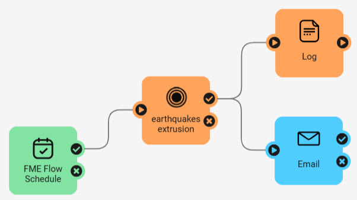
As you learnt in the previous lesson, you configure a Schedule to run a workspace by completing a single form that specifies the schedule and workspace details. In Automations, you must configure both the Schedule trigger and a Run a Workspace action to accomplish the same scenario as a Schedule.
Schedule Trigger
Each Automation begins with a trigger. To configure the trigger to be a Schedule, open the Trigger details and select FME Flow Schedule (initiated) from the Details panel. From here, you configure the Schedule Type and set up the parameters for when you want the schedule to run and repeat.
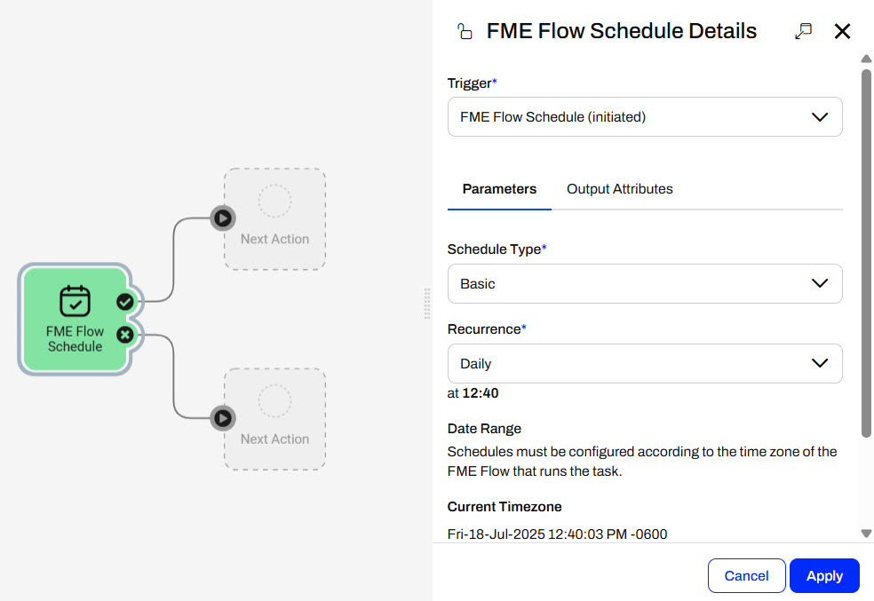
The FME Flow Schedule (initiated) trigger supports three Schedule Types:
- Basic
- Repeats based on a calendar-friendly selection of intervals derived from a specified Start time.
- For example, you schedule the workflow to run weekly on Tuesdays.
- Run on Interval
- Repeats in intervals from a list of predefined units.
- For example, you set the workflow to run once every 3 hours.
- CRON Expression
- Repeats based on your cron expression.
- For example, you use the expression 0 0,15 0,8 LW * ? * to trigger the workflow to run at 8:15 am on the last weekday of every month.
These are the same Schedule Types as FME Flow offers in Schedules, except for the Occur Only Once option.
Again, you may also configure a Date Range for FME Flow to trigger the Automation within.
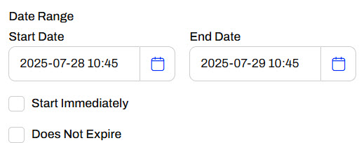
Once you've set your schedule details, click Apply to close the trigger details.
Run a Workspace Action
To run a workspace when the Automation triggers, you must connect a Run a Workspace internal action to the success port of the trigger.
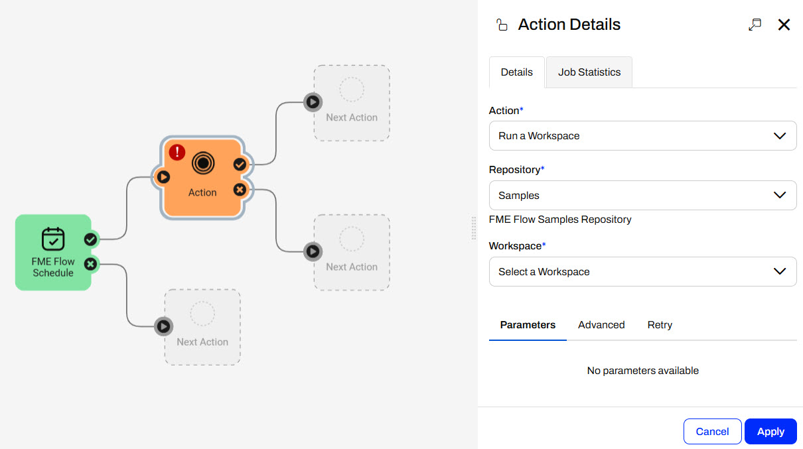
In the Action Details pane, you select the workspace you want to run and configure any parameters for the workspace.
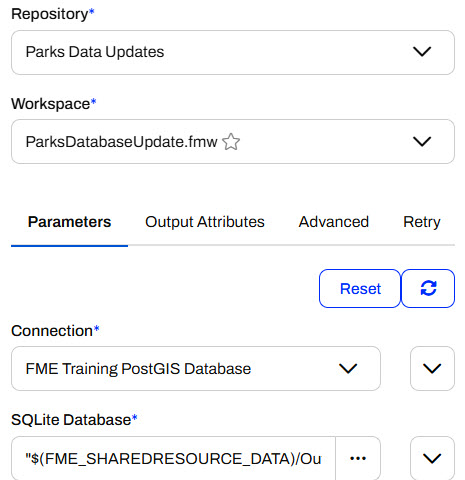
The same queue, expiry, and debug options are under the Advanced tab in Automations as the Advanced section of Schedules. You'll learn more about Output Attributes in the Job Orchestration in Automations course. Once you click Apply, the internal action on the Automations canvas will update to reflect your workspace name.

You may connect and configure additional internal and external actions to the workspace action's success and failure ports.
Start Automation
Once you add your trigger and actions to your Automation, you must start it to trigger and run on the schedule you created.
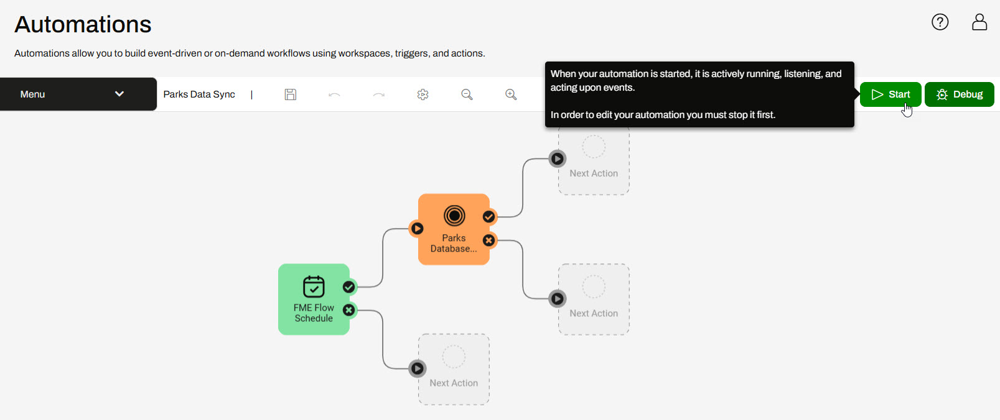
While the Automation is actively running, it will trigger your workspace to run according to the schedule details you set.
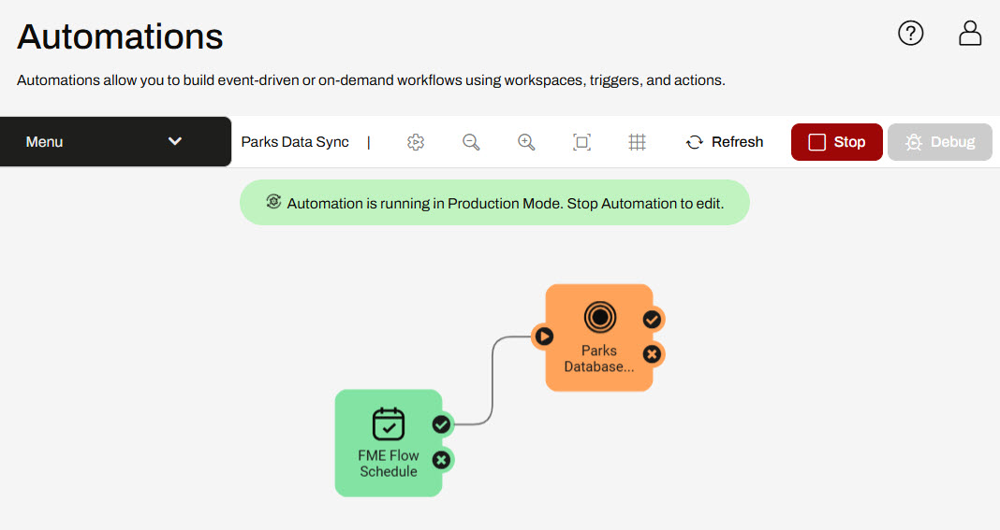
Optionally, you may manually trigger the Automation to run by opening the Schedule trigger details and clicking Trigger.
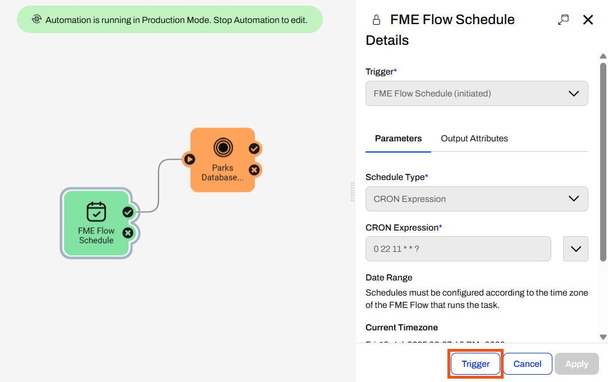
Exercise

Jennifer continues with her Parks database update workflow. However, she has now created a summary workspace on the incoming data to the SQLite database. She needs to process this workspace immediately after running the Parks Database Update workspace. She's already published the workspaces to FME Flow and will create an Automation to run her multi-workspace workflow on a schedule.
Follow along with Jennifer's steps as she creates and runs her Automation.
1) Create Automation
From the FME Flow menu, Jennifer expands Automations and selects Create Automation.
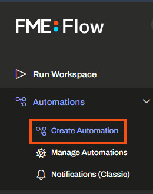
The Get Started page opens, and Jennifer clicks the Create tab and then selects Create New...
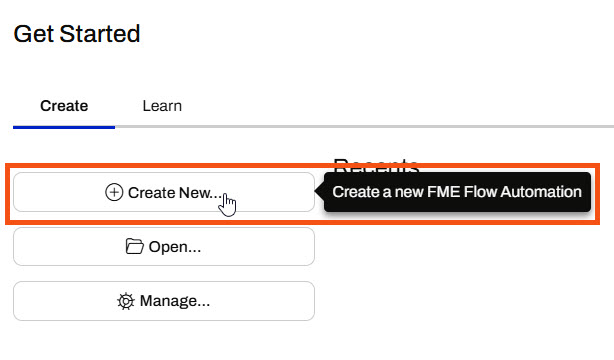
The FME Flow Automations canvas opens with a trigger that is ready to configure.
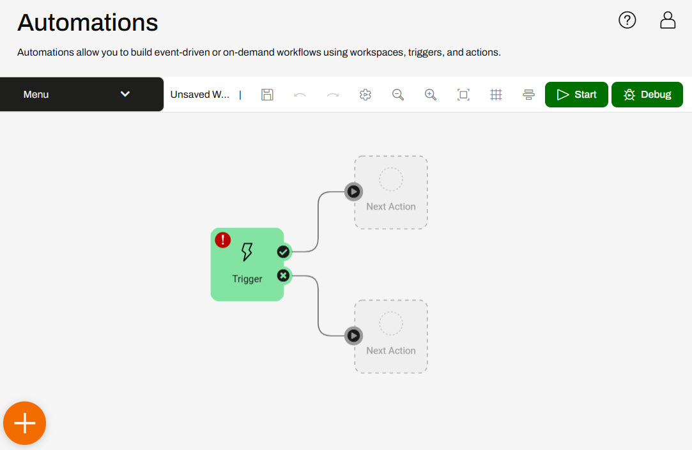
2) Configure Schedule Trigger
Jennifer double-clicks the trigger to open the Trigger Details.
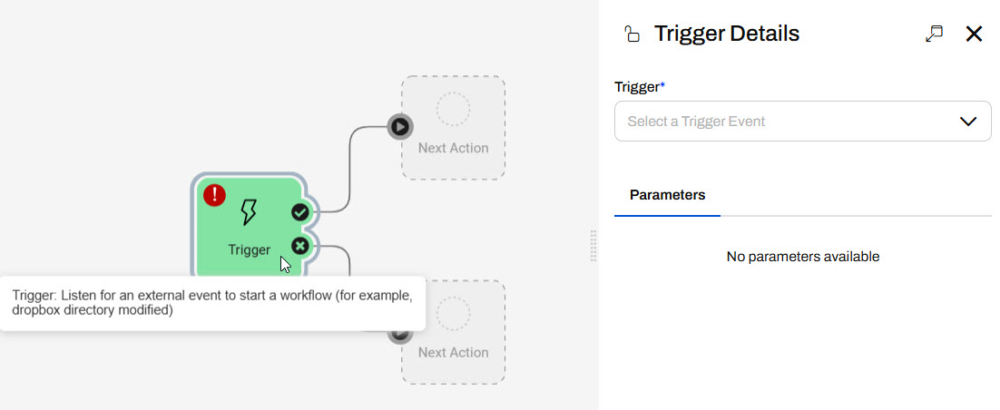
Jennifer selects the FME Flow Schedule (initiated) trigger and configures it to repeat at an interval every day. She selects Start Immediately, so the Automation will run for the first time as soon as it's started, and checks Does Not Expire.
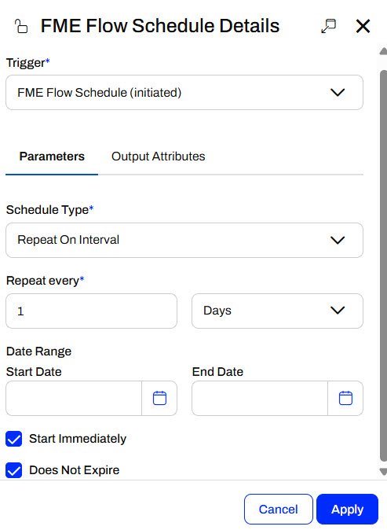
She clicks Apply to close the details and update the canvas with the schedule trigger.
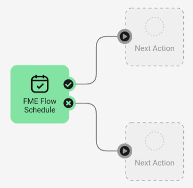
3) Add a Run a Workspace Action
Jennifer clicks the Next Action icon from the trigger success port to open its details.
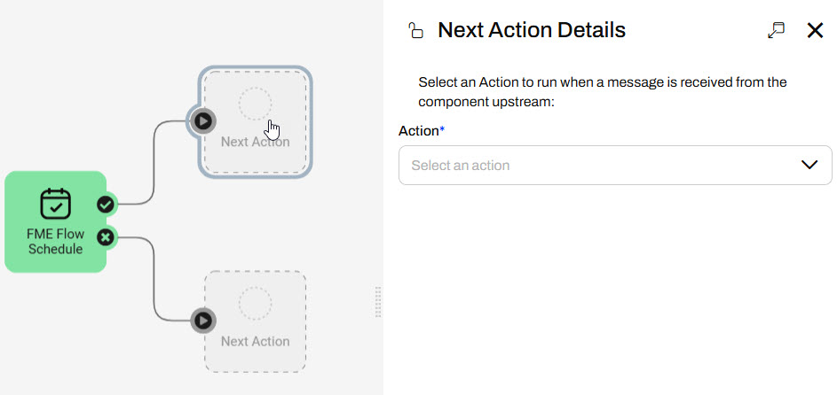
She selects a Run a Workspace action and selects the ParksDatabaseUpdate.fmw workspace in the Parks Data Updates repository.
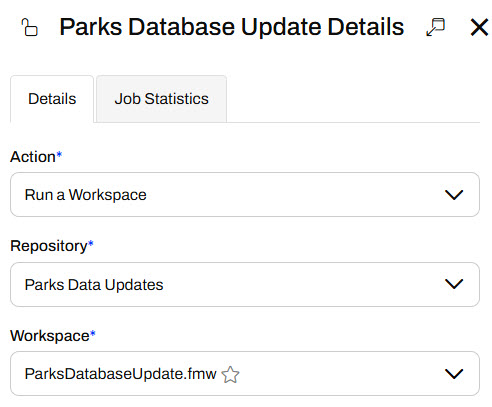
She leaves the parameters as they are with their default values. She does not need to configure any other settings for this workspace action. She clicks Apply to close the details and add the action to the Automation.
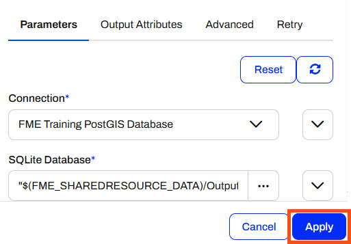
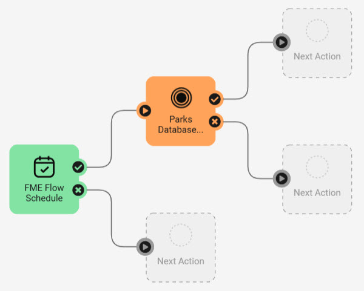
4) Add Second Workspace Action
Jennifer configures another Run a Workspace action out of the success port of the Parks Database Update workspace action. This time, she selects the UpdatedParksSummary.fmw workspace in the Parks Data Updates repository. This workspace has no parameters and she does not need to configure any other settings, so she clicks Apply.
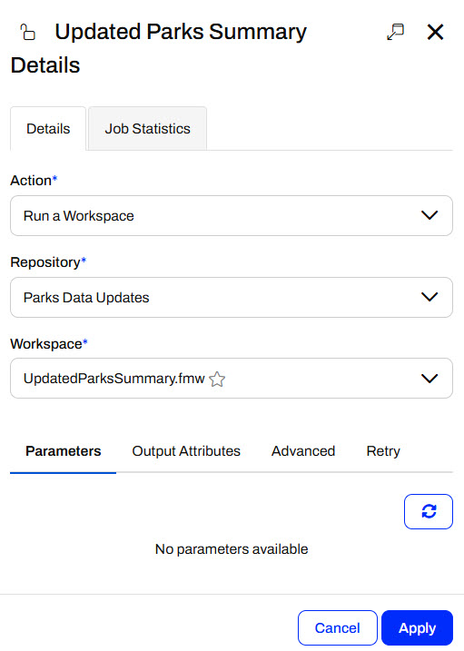
Jennifer now has the FME Flow Schedule Trigger and two Run a Workspace actions in her Automation.
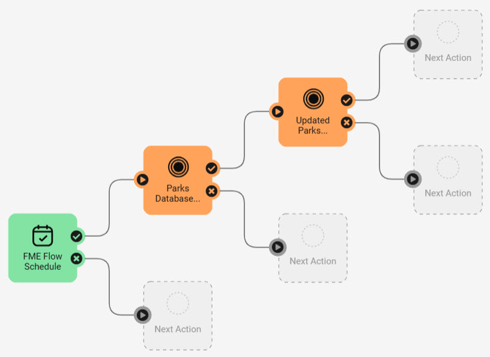
5) Start Automation
Jennifer clicks Save and names her Automation Parks Update and Summary.
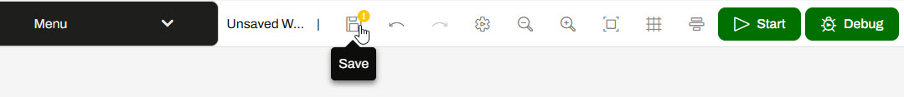
She clicks Start to start the Automation.
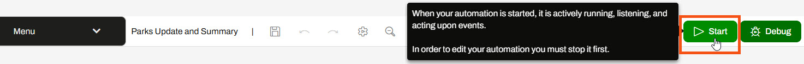
Since the schedule trigger was configured to start immediately, FME Flow triggers the Automation to run right away and Jennifer sees the event counts update on the canvas.
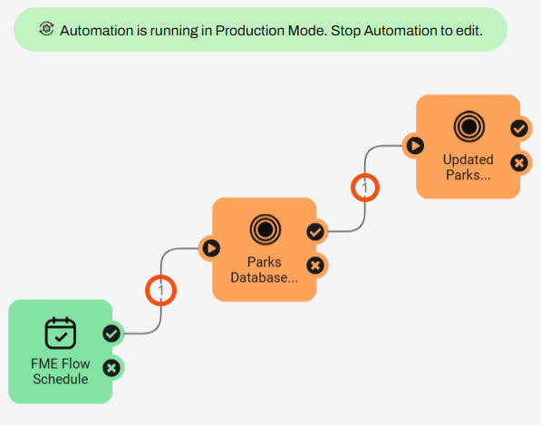
6) Check Jobs
Jennifer opens the Completed Jobs page on FME Flow and sees that her Automations jobs are complete.
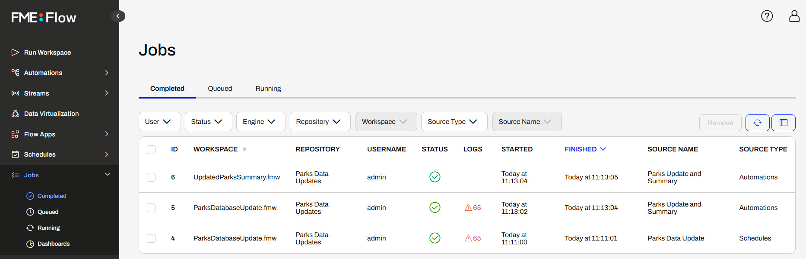
Jennifer now runs multiple workspaces daily. She saves time by not running them manually and ensures the data is consistently up-to-date.